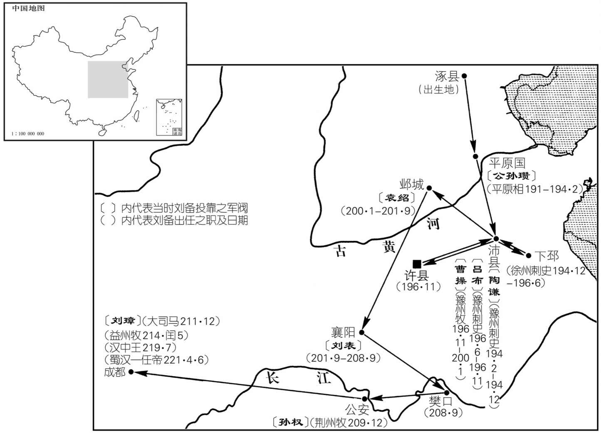
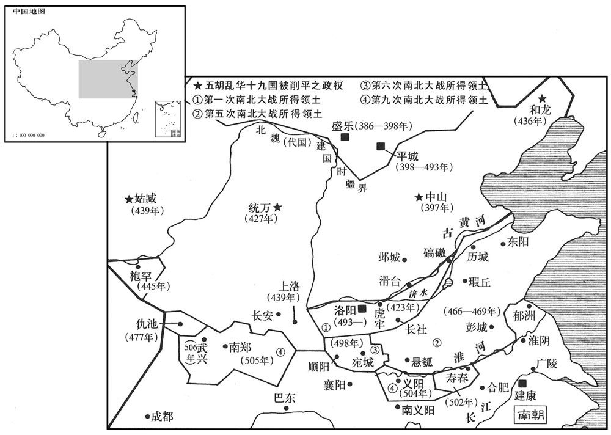
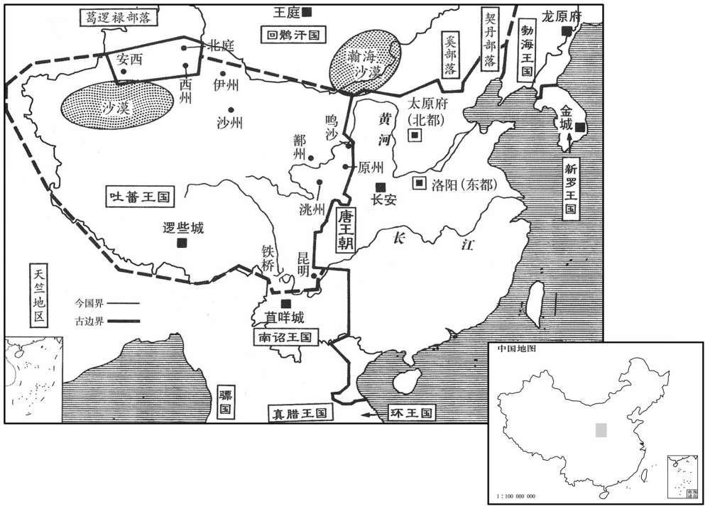

公元80年资治通鉴：本年记事、原文与白话对照
按原书编年位置阅读；追叙和史论不等于本年发生的事件。白话采用所据译本，缺译不以生成译文补齐。
卷46 · 本年记事
公元80年 · 汉肃宗孝章皇帝建初五年
五年〔（庚辰、八○）〕
上传原文的注释括号有异常，字符原样保留；无法可靠划分的段落默认全文显示。

本年形势与背景参考图

本年形势与背景参考图

本年形势与背景参考图

本年形势与背景参考图

本年形势与背景参考图
春，二月，庚辰朔，日有食之；诏举直言极谏。
春季，二月庚辰朔（初一），出现日食。章帝下诏，命令举荐“直言极谏”��敢于直率批评朝廷的人士。
荆、豫诸郡兵讨溇中蛮，破之。〔溇，郎侯翻。〕
荆州、豫州诸郡郡兵讨伐中蛮人，打败蛮人叛军。
夏，五月，辛亥，诏曰：「朕思迟直士，侧席异闻，〔贤曰：迟，犹希望也，音持二翻。侧席，谓不正坐，所以待贤良也。〕其先至者，各已发愤吐懑，〔懑，莫困翻，又莫旱翻。〕略闻子大夫之志矣。皆欲置于左右，顾问省纳。〔句断。省，悉景翻。〕建武诏书又曰：『尧试臣以职，不直以言语笔札。』今外官多旷，并可以补任。」
夏季，五月辛亥（初三），章帝下诏说：“朕希望会见正直的人士，侧坐在席上，聆听新的言论。先来到的，都已倾吐各自的愤懑，朕大致了解贤才们的志趣了。朕打算将你们全都安排在身边，以备顾问咨询。但光武皇帝在诏书中曾说：‘尧以任职能力来考察官员，而不单看他们的言论和文字。’如今地方上有很多官员出缺，你们可一并去补充接任。”
戊辰，太傅赵熹薨。
五月戊辰（二十日），太傅赵熹去世。
班超欲遂平西域，上疏请兵曰：「臣窃见先帝欲开西域，故北击匈奴，西使外国，〔使，疏吏翻。〕鄯善、于窴实时向化，鄯、上扇翻。〕今拘弥、莎车、疏勒、月氏、乌孙、康居复愿归附，〔复，扶又翻。〕欲共并力，破灭龟兹，平通汉道。若得龟兹，则西域未服者百分之一耳。前世议者皆曰：『取三十六国，号为断屯奴右臂。』〔贤曰：前书曰：汉遣公主为乌孙夫人，结为昆弟，则是断屯奴右臂也。哀帝时，刘歆上议曰：武帝立五属国，起朔方伐朝鲜，起玄菟、乐浪以断匈奴左臂也；西伐大宛，结乌孙，裂匈奴之右臂也。南面，以西为右。断，丁管翻。〕今西域诸国，自日之所入，莫不向化，〔西域传曰：自条支国乘水西行，可百余日，近日所入也。〕大小欣欣，贡奉不绝，唯延〔【章：甲十六行本「延」作「焉」；乙十一行本同；孔本同；张校同。】〕耆、龟兹独未服从。臣前与官属三十六人奉使绝域，备遭艰繍，自孤守疏勒，于今五载，〔使，疏吏翻。载，子亥翻。〕胡夷情数，臣颇识之，问其城郭小大，皆言倚汉与依天等。〔谓城郭之国，若小若大，其言皆然。〕以是效之，〔贤曰：效犹验也。〕则葱领可通，〔古领、岭字通。〕龟兹可伐。今宜拜龟兹侍弓白霸为其国王，以步骑数百送之，与诸国连兵，岁月之间，龟兹可禽。以夷狄攻夷狄，计之善者也！臣见莎车、疏勒田地肥广，草牧饶衍，不比敦煌、鄯善间也，〔敦，徒门翻。〕兵可不费中国而粮食自足。且姑墨、温宿二王，特为龟兹所置，〔前书，温宿国治温宿城，去长安八千三百五十里。〕既非其种，〔种，章勇翻。〕更相厌苦，其势必有降者；若二国来降，则龟兹自破。〔更，工衡翻。降，户江翻；下同。〕愿下臣章，参考行事，诚有万分，死复何复！〔下，遐稼翻。复，扶又翻。〕臣超区区特蒙神灵，窃冀未便僵仆，目见西域平定，陛下举万年今觞，〔言西域平定，廷臣毕贺，天子为之举觞也。〕荐勋祖庙，布大喜于天下。」〔贤曰：荐，进也。勋，功也。左氏传曰：反行饮至，舍爵策勋也。余谓超盖言平西域，告成功于祖庙也。〕书奏，帝知其功可成，议欲给兵。平陵徐干上疏，愿奋身佐超，帝以干为假司马，将弛刑及义从千人就超。〔弛，刑徒也。义从，自奋愿从行者。或曰：义从胡也。从，才用翻。〕
班超想要完成平定西域的事业，上书请求用兵。他说：“我看到先帝打算开拓西域，所以向北进攻匈奴，向西派使者与各国交往，鄯善、于阗两国立即归附了汉朝。如今拘弥、莎车、疏勒、月氏、乌孙及康居等国都愿再度归附，并准备联合力量消灭龟兹，铲平通往中国道路上的障碍。如果攻下龟兹，那么西域地区不服从汉朝的，只剩百分之一而已。前代谈论西域的人都说：‘征服三十六国，可称作斩断匈奴的右臂。’如今西域各国，自太阳落山处以东，无不向往归顺汉朝，大国小国全都十分踊跃，不断地进贡奉献，唯独焉耆和龟兹拒不服从。先前，我曾率领部下三十六人出使绝远的异域，备受艰难困苦，自从孤守疏勒，到如今已有五年。对于异族的情况，我颇有了解。无论询问西域的大国小国，全都一致回答：依赖汉朝，等于依赖上天。从这一点能够证明，葱岭可以打通，龟兹可以讨伐。如今应将龟兹派到汉朝做人质的王子白霸封为龟兹王，用步骑兵数百人护送，让他同西域各国组成联合部队，数月到一年间便可夺取龟兹。利用夷狄去打夷狄，这是计策中最高明的计策！我看到莎车、疏勒的土地肥沃广袤，牧草茂盛，牲畜成群，不象敦煌、鄯善一带，用兵无须消耗中原物资，而粮秣却自给自足。而且姑墨、温宿两国国王系由龟兹特别委任，他们与本国人既非同种，又相互厌恶敌对，迫于形势，一定会有人投降。如果这两国归顺了汉朝，那么龟兹便不攻自败。请将我的奏章交付朝廷讨论，作为决事的参考。真的有一点可行之处，死又有何遗憾！但微臣班超特别幸运地得到了神灵的保佑，我希望且不要倒下死去，愿亲眼看到西域归顺，陛下举起祝福万年的酒觞，向祖庙祭告献功，向天下宣布大喜。”奏书呈上，章帝知道这一事业可以成功，便召集群臣商议，准备给班超派兵。平陵人徐干上书朝廷，愿奋勇出征，做班超的助手。于是章帝将徐干任命为副司马，率领免刑囚徒及志愿从军的义勇，共一千人，到西域听候班超指挥。
先是莎车以为汉兵不出，〔先，悉荐翻。〕遂降于龟兹，而疏勒都尉番辰亦叛。〔贤曰：番，音潘。〕会徐干适至，超遂与干击番辰，大破之，斩首千余级。欲进攻龟兹，以乌孙兵强，宜因其力，乃上言：「乌孙大国，控弦十万，故武帝妻以公主，〔事见二十一卷元封六年。妻，七细翻。〕至孝宣帝卒得其用，〔事见二十四卷本始三年。卒，子恤翻。〕今可遣使招慰，与共合力。」帝纳之。
此前，莎车认为汉朝不会出兵，便向龟兹投降，疏勒都尉番辰也背叛了汉朝。恰好徐干赶到，班超便和他一同进攻番辰。他们大败番辰，斩杀了一千多人。班超打算攻打龟兹，认为乌孙兵强，应当利用乌孙的力量，于是上书说：“乌孙是个大国，有善射之兵十万，因此武帝把公主嫁给了乌孙王。到孝宣皇帝时，终于收到成效。如今应当派使者去招抚慰问，使乌孙与我们同心合力。”章帝采纳了他的建议。